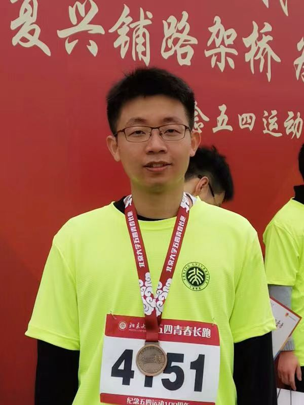

Chong Chen
|  | Research Scientist, |
About Me
I'm currently a research scientist in DAMO Academy, Alibaba Group. I received the B.S. degree in Mathematics from Peking University in 2013 and the Ph.D. degree in Statistics from Peking University in 2019 under the supervision of Prof. Ruibin Xi. My research interests include image clustering/segmentation/retrieval, self-supervised learning, and statistical modeling.
Recruit
I'm recruiting self-motivated master students who have strong mathematical abilities and coding skills to work with me on computer vision and data mining related research topics. Welcome to send me your detailed resume!
Honors and Awards
2018. President Scholarship, Peking University
2017. China National Scholarship
2014. Outstanding Student, Peking University
2009. Sliver medal, Chinese Mathematical Olympiad
Selected Publication
(^ denotes corresponding author)Yingjie Chen, Huasong Zhong, Chong Chen^, Chen Shen, Jianqiang Huang, Tao Wang, Yun Liang and Qianru Sun "On Mitigating Hard Clusters for Face Clustering", ECCV 2022(oral)
Huasong Zhong, Jianlong wu, Chong Chen^, Jianqiang Huang, Minghua Deng, Liqiang Nie, Zhouchen Lin and Xian-Sheng Hua "Graph Contrastive Clustering", ICCV 2021
Xiao Luo, Daqing Wu, Zeyu Ma, Chong Chen^, Huasong Zhong, Minghua Deng^, Jianqiang Huang and Xian-Sheng Hua "CIMON: Towards High-quality Hash Codes", IJCAI 2021
Xiao Luo, Daqing Wu, Zeyu Ma, Chong Chen^, Minghua Deng^, Jianqiang Huang and Xian-Sheng Hua "A Statistical Approach to Mining Semantic Similarity For Deep Unsupervised Hashing", ACMMM 2021
Chong Chen, Changjing Wu, Linjie Wu, Xiaochen Wang, Minghua Deng and Ruibin Xi "scRMD: Imputation for single cell RNA-seq data via robust matrix decomposition", Bioinformatics 2020
Chong Chen, Nan Lin and Ruibin Xi "Community detection by L0-penalized graph Laplacian", Electronic Journal of Statistics 2018
Huili Yuan, Ruibin Xi, Chong Chen and Minghua Deng "Differential network analysis via lasso penalized D-trace loss", Biometrika 2017
Academic Services
PC Member/Conference Reviewer for AAAI 2023, IJCAI 2023, KDD 2023
Journal Reviewer for TNNLS